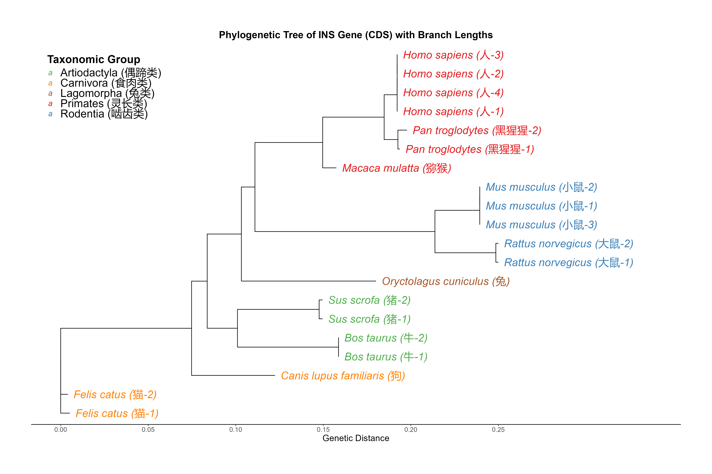

分子进化树的构建
一、MEGA 的介绍与官方网站
1.1 软件简介
MEGA（Molecular Evolutionary Genetics Analysis）是常用的分子进化与系统发育分析软件，提供序列比对、进化模型选择、邻接法与最大似然法等多种建树途径，以及树形编辑与统计检验等图形化功能。实验桌面端以 Windows 安装包最为常见；其他系统可在官网选择对应版本。
下载与安装前请准备可联网的浏览器；安装过程可能需要本机管理员权限（视系统策略而定）。使用软件须遵守官网公示的许可条款，并限于教学与科研等允许用途。
1.2 官方网站
MEGA 由开发团队通过官方网站发布版本与文档，请认准下列入口，避免从不明第三方站点获取安装包。
二、MEGA 的下载与安装
以下以在 Windows 上从官网获取 .exe 安装包并完成安装为例；若官网页面选项与下文略有出入，以当前版本页面为准。
视频教程：MEGA 下载与安装（MP4）
2.1 打开主页并进入下载流程
- 在浏览器中打开 MEGA 官方主页：https://www.megasoftware.net/。
- 在主页上找到绿色的 DOWNLOAD 按钮，单击进入下载相关页面。
2.2 接受用户许可协议
- 页面将跳转至 MEGA User Agreement（用户协议）。
- 阅读后在页面下方单击绿色的 Accept（同意），继续下载流程。
2.3 填写基本信息并下载安装包
- 在正式下载前，按页面要求填写必要信息：例如在 Country（国家/地区）中选择所在地（如 China），并填写机构名称与身份等字段（以页面实际选项为准）。
- 填写完毕后，单击页面上的下载按钮，将适用于本机的安装包保存到磁盘（Windows 一般为
.exe）。
若国际网络访问较慢，可在遵守许可的前提下使用课程提供的离线安装包或单位镜像。
2.4 运行安装程序与安装向导（Windows）
- 在资源管理器中双击已下载的
.exe。若出现用户账户控制（UAC）提示，在确认文件来源可靠后选择允许。 - 语言：向导首屏通常可选择界面语言（默认多为 English），单击 OK。
- 许可条款：勾选同意安装协议，单击 Next。
- 安装路径：可使用默认路径，或通过 Browse 指定目录，然后继续 Next。
- 其后按向导提示依次单击 Next，直至开始复制文件并完成安装阶段（具体页数因版本可能略有不同）。
2.5 完成安装并启动
- 待进度结束，在结束页单击 Finish。若向导提供立即运行选项，可按需勾选。
- 也可从开始菜单或桌面快捷方式启动 MEGA。
- 确认 图形化主界面正常打开后，即可进行后续的序列导入、比对与系统发育树构建等操作。
以上为从 MEGA 官方网站获取安装包、完成注册与下载，以及在 Windows 环境下安装并启动主界面的完整流程。
三、示例数据：INS 基因 CDS（FASTA）
3.1 数据文件与说明
本教程后续将以 多个哺乳动物（含部分非哺乳类对照）胰岛素基因（INS）CDS 的 FASTA 文件为例，演示在 MEGA 12 中完成：导入序列 → 多序列比对 → 构建系统发育树 → 导出结果。
- 数据文件：
data/INS_cds.fasta - 同一物种可能包含多个转录本（如
human_tx1、human_tx2等）。
3.2 下载示例文件
- 下载：INS_cds.fasta
- 仓库路径：
data/INS_cds.fasta
四、MEGA 12 构建分子进化树（操作步骤）
本节以第 3 章的 INS CDS 为例，给出 MEGA 12 的常用操作路径。不同版本的菜单名称可能略有差异，但整体流程一致：导入 → 比对 → 选择方法 → 建树 → 导出。
4.1 导入序列
- 启动 MEGA 12。
- 在主界面选择 Align（序列比对相关入口），进入比对工作区（Alignment Explorer）。
- 在比对窗口中选择 Edit 或 Data 菜单下的导入功能（不同界面位置可能不同），从文件导入
data/INS_cds.fasta。 - 确认每条序列的名称（如
human_tx1、mouse_tx1）在左侧列表可见，且序列方向一致（均为 5′→3′）。
4.2 多序列比对
- 在 Alignment Explorer 中选择 Align by MUSCLE（或课程指定的 ClustalW/Clustal Omega），对所有序列进行多序列比对。
- 比对完成后，检查是否出现明显异常：例如某条序列前后出现大量缺口（gap），或长度显著不同导致比对质量下降。
- 将比对结果保存为 MEGA 格式工程文件（常用为
.meg），以便后续反复调整参数。
4.3 修剪与质量检查
- 若序列两端存在明显的低一致性区域或长度不齐，可在比对窗口中对两端进行适度修剪，使大多数序列覆盖到相同的比对区段。
- 确认最终用于建树的数据为“已比对”的序列集合，而不是原始未比对 FASTA。
4.4 选择建树方法与参数
- 在 MEGA 主界面选择 Phylogeny（系统发育）相关入口，基于已对齐的数据进行建树。
- 常用方法：
- Neighbor-Joining（NJ）：速度快，适合课堂演示整体流程。
- Maximum Likelihood（ML）：更常用于正式分析，计算时间更长。
- 模型与缺口处理：对于核酸 CDS，通常选择核酸替换模型（以课程要求为准）；缺口（gap）与缺失位点常见处理为 Complete Deletion 或 Partial Deletion（设置阈值保留尽可能多的位点）。
- 置信度评估：勾选 Bootstrap（自助法）并设置重复次数（课堂演示可 100；更稳定的分析常用 500–1000）。
- 运行建树，得到系统发育树窗口（Tree Explorer）。
4.5 导出与展示
- 在 Tree Explorer 中调整树形显示：分支长度、节点置信度（bootstrap 值）显示位置、字体与标签等。
- 导出树文件与图片：常见格式包括 Newick（
.nwk）用于后续软件复用，以及 PNG/SVG 用于报告与课件。 - 建议保存当前工程（比对文件 + 树文件），以便下一次修改参数后对比不同方法（NJ vs ML）、不同缺口处理策略的影响。
五、使用 R 语言构建进化树
除 MEGA 外，也可用 R 读取同一套 INS CDS FASTA，完成比对、距离计算、建树与可视化。下面给出配套脚本下载、流程概览与示例输出图。
5.1 R 脚本下载
- 下载：phylogenetic_tree.R
- 仓库路径：
data/phylogenetic_tree.R
脚本默认与 INS_cds.fasta 位于同一目录时可直接运行；若路径不同，请修改脚本中的 input_fasta。
5.2 流程概览（思维导图式）
以下按脚本执行顺序概括主要环节（中心为「INS CDS 进化树」）：
- 安装并加载 R 包：
Biostrings、muscle、ape、ggtree、ggplot2、grid等；首次使用需在 R 中按各包说明完成安装。 - 读取序列：用
readDNAStringSet()读入INS_cds.fasta。 - 多序列比对：
muscle::muscle()比对后转为DNAbin，供距离计算使用。 - 距离与建树：
ape::dist.dna()采用 TN93 模型、pairwise.deletion = TRUE；再用ape::fastme.bal()得到带分支长度的树。 - 定根：用共表型距离找出最远的一对 tip，取其一作为外群，
ape::root(..., resolve.root = TRUE)。 - 标签与分组着色：将 tip 名映射为拉丁学名与中文注释，并按灵长类、啮齿类等分类群赋色。
- 出图与保存：
ggtree绘制分支长度标尺与图例，ggsave()输出高分辨率INS_tree.png。
5.3 步骤说明与结果图
按上表顺序在 R 或 RStudio 中运行脚本后，应得到与下图类似的系统发育树（横轴为遗传距离，叶节点按分类群着色）。

INS_cds.fasta 的 INS 基因 CDS 系统发育树（R 脚本输出示例）。